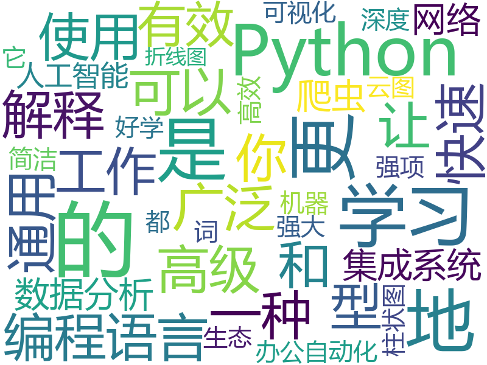
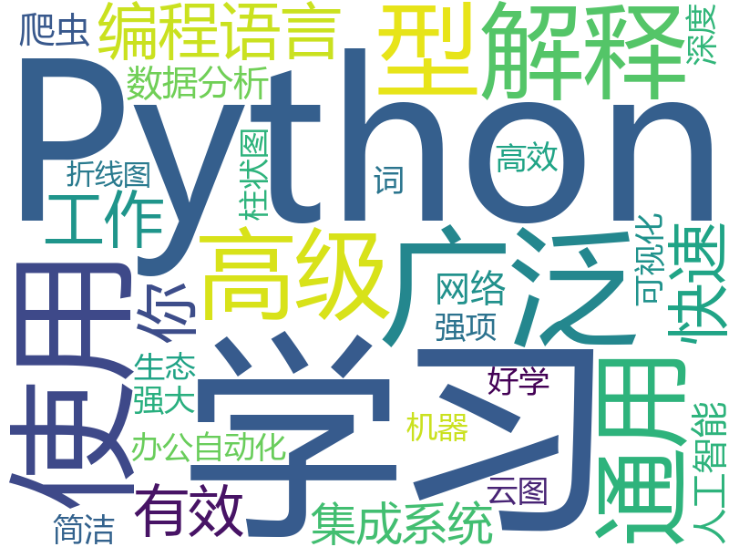
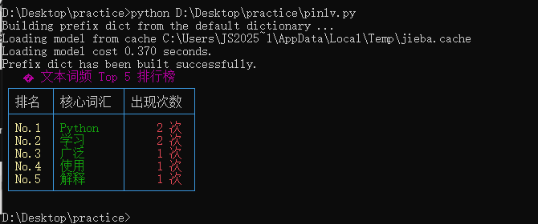

EXERCISE 01
基础词云
jieba 中文分词 + wordcloud 生成最简词云图，中文需指定字体路径避免方块字。

EXERCISE 02
升级版词云
加停用词过滤 + 形状蒙版（mask.png）+ viridis 配色主题，让词云更有设计感。

EXERCISE 03
词频 Top5
jieba + Counter 统计词频 + rich 表格彩色看板，命令行的精致排版。

📊 文本词频统计 · 浏览器版
纯前端实现：汉字字符频率 + 常见 2 字词组合。完整 jieba 词典需 Python 环境，下方工具演示「去停用字后按频率排序」的核心理念。
共 0 字符
去停用后 0
Top 0 词
📝 学习笔记
~/practice · 三个小练习 + 真实运行截图 · 数据仅存本机浏览器